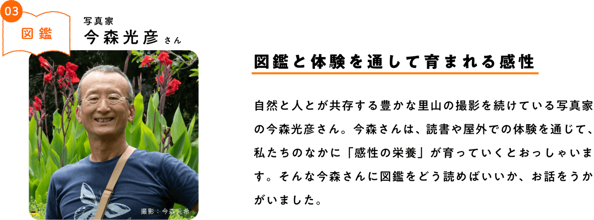
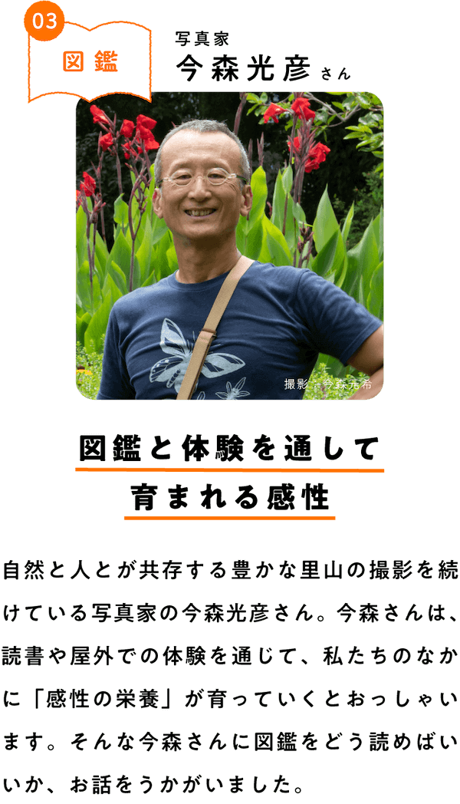
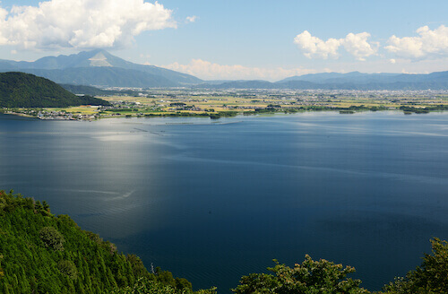
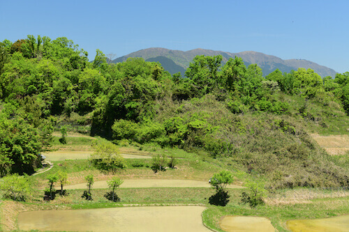
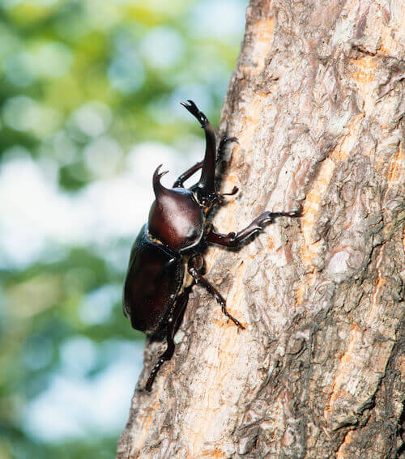
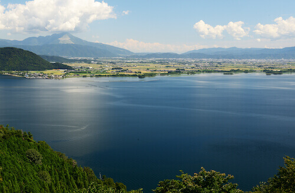
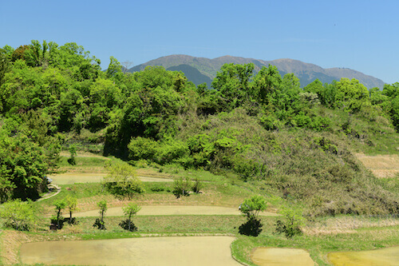
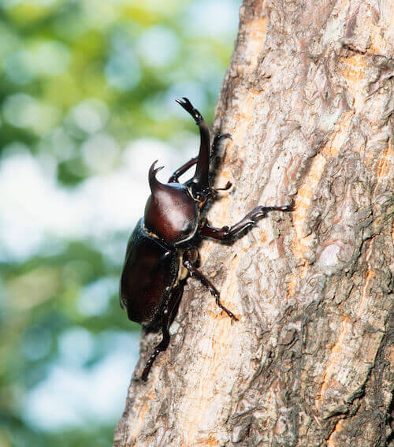

今森光彦（いまもり・みつひこ）
1954年滋賀県に生まれる。琵琶湖をのぞむ自然豊かなエリアで昆虫や植物、また自然と人が共存する里山の撮影を続けている。主な著書に『今森光彦 昆虫記』などがあり、受賞も多数。
※本文中の写真は今森光彦さんよりご提供いただきました。


やっぱり生きものに関する本は記憶に残っていますね。小学校中学年くらいに蝶々が好きになりました。それとの関連で、ヘルマン・ヘッセの『少年の日の思い出』を読んで感動したことを覚えています。また、「ファーブル昆虫記」にははまりましたね。少年少女向けもあったのですが、ぼくは大人向けのほうがおもしろく感じて、わからない漢字もたくさんあったけど、自分の好きなところから読んだりしていました。あとは、小学四年生のとき、ぼくがあまりに図鑑が好きだったので、親が大人向けの鳥の図鑑と蝶々の図鑑を買ってくれました。それがうれしくて、その二冊とは一緒に寝ていたくらいです。読書という枠を超えて、友達のようでしたね。

みなさんは、図鑑にどのようなイメージをお持ちでしょうか。もしかしたら、さまざまなものがきれいに分類されて並んでいる本と思うかもしれません。
でも、そうとも限りませんよ。ぼくが子どものころから好きだった図鑑には、事実だけではなく、作者自身の想いや感じたこともたくさん書かれてありました。また、作者が自分の専門以外のことにも詳しくて、一冊にいろいろな知識が盛り込まれていたのを思い出します。ぼくはそれをまるで物語を読むような気持ちで楽しんでいました。それらの本はいまもぼくのお手本で、本をつくるときはぼくもそのようなものにしたいなあと思って取り組んでいます。みなさんも、そんな気持ちで図鑑を開いてみてはどうでしょうか。
さて、ここからは図鑑をもっと楽しめるようなるための、自然への目の向けかたについてアドバイスしたいと思います。
 みなさんが生きものの図鑑に関心があるならば、できれば実際に生きたものを見に行ってみてほしいと思います。近所の公園など、身近なところにもいろいろな発見があるはずです。ぼくも普段は、滋賀県の琵琶湖の近くのせまいエリアで自然を観察していますが、そこにも多様な生きものがいて、研究には終わりがありません。
もしみなさんがもっと自然について知りたくなったら、夏休みなどを使っていつもぼくが過ごしたり写真を撮ったりしている「里山」に出かけてみてはどうでしょうか。里山とは、自然と人間が共存している空間のことです。そこに身をおけば、みなさんの探求はおおきく前進すると思います。たとえば、みなさんが普段食べているお米や野菜などもそのようなところでできていますから、自分と自然がどのようにつながっているかを考えるきっかけになります。そのような営みのなかにいろんな生きものがいることも見えてきて、本当に楽しいですよ。
さらに上級者のかたへのアドバイスは、ぜひ「環境」というものに目をむけてもらいたいということです。ぼくは毎年昆虫教室を開催していますが、参加者にカブトムシを見せようと思ってやっているのではありません。カブトムシが棲める環境ってなんだろうと考えてほしいのです。カブトムシの種類をたくさん知っている子も、実際にカブトムシがどこに棲んでいるのかまでは知らないことが少なくありません。雑木林を歩くのがはじめての子は、そこで実際に人が働いているところなどに遭遇するとびっくりします。植物や昆虫、動物などさまざまなものの関係性に広く目をむけられるようになると、じつはいまの日本にはカブトムシが棲める雑木林がとても少なくなっていることもわかってきます。
最後になりますが、図鑑は、学校の授業では学びきれないことを知ることができる窓口になると思います。ですから、図鑑をきっかけにいろんな知識に触れ、ぜひ外に出かけてみてください。そして外で未知のものに出会ったら、また図鑑を開いてみてください。そうしているうちに、自然に関する知識を得られるだけでなく、生きものどうしの関係性がわかるようになってきます。
ぼくがいちばん伝えたいことは、なにより楽しむことを大切にしてほしいということです。ぼくは、図鑑を読んだり、野外で生きものに触れたりする体験を通じて、みなさんのなかに「感性の栄養」が育っていくと思っています。体験というのは豊かな土壌のようにみなさんのなかに蓄積していきますから、安心していてください。
でも、そうとも限りませんよ。ぼくが子どものころから好きだった図鑑には、事実だけではなく、作者自身の想いや感じたこともたくさん書かれてありました。また、作者が自分の専門以外のことにも詳しくて、一冊にいろいろな知識が盛り込まれていたのを思い出します。ぼくはそれをまるで物語を読むような気持ちで楽しんでいました。それらの本はいまもぼくのお手本で、本をつくるときはぼくもそのようなものにしたいなあと思って取り組んでいます。みなさんも、そんな気持ちで図鑑を開いてみてはどうでしょうか。
さて、ここからは図鑑をもっと楽しめるようなるための、自然への目の向けかたについてアドバイスしたいと思います。
 みなさんが生きものの図鑑に関心があるならば、できれば実際に生きたものを見に行ってみてほしいと思います。近所の公園など、身近なところにもいろいろな発見があるはずです。ぼくも普段は、滋賀県の琵琶湖の近くのせまいエリアで自然を観察していますが、そこにも多様な生きものがいて、研究には終わりがありません。
もしみなさんがもっと自然について知りたくなったら、夏休みなどを使っていつもぼくが過ごしたり写真を撮ったりしている「里山」に出かけてみてはどうでしょうか。里山とは、自然と人間が共存している空間のことです。そこに身をおけば、みなさんの探求はおおきく前進すると思います。たとえば、みなさんが普段食べているお米や野菜などもそのようなところでできていますから、自分と自然がどのようにつながっているかを考えるきっかけになります。そのような営みのなかにいろんな生きものがいることも見えてきて、本当に楽しいですよ。
さらに上級者のかたへのアドバイスは、ぜひ「環境」というものに目をむけてもらいたいということです。ぼくは毎年昆虫教室を開催していますが、参加者にカブトムシを見せようと思ってやっているのではありません。カブトムシが棲める環境ってなんだろうと考えてほしいのです。カブトムシの種類をたくさん知っている子も、実際にカブトムシがどこに棲んでいるのかまでは知らないことが少なくありません。雑木林を歩くのがはじめての子は、そこで実際に人が働いているところなどに遭遇するとびっくりします。植物や昆虫、動物などさまざまなものの関係性に広く目をむけられるようになると、じつはいまの日本にはカブトムシが棲める雑木林がとても少なくなっていることもわかってきます。
最後になりますが、図鑑は、学校の授業では学びきれないことを知ることができる窓口になると思います。ですから、図鑑をきっかけにいろんな知識に触れ、ぜひ外に出かけてみてください。そして外で未知のものに出会ったら、また図鑑を開いてみてください。そうしているうちに、自然に関する知識を得られるだけでなく、生きものどうしの関係性がわかるようになってきます。
ぼくがいちばん伝えたいことは、なにより楽しむことを大切にしてほしいということです。ぼくは、図鑑を読んだり、野外で生きものに触れたりする体験を通じて、みなさんのなかに「感性の栄養」が育っていくと思っています。体験というのは豊かな土壌のようにみなさんのなかに蓄積していきますから、安心していてください。

質問：図鑑を作るとき、いちばん心がけていることは何ですか。
今森さんの答え：図鑑作りで大切なのは、テーマのとらえ方かも知れません。昆虫や植物のように生きものによって分けて作る場合と、最近は「里山の生きもの」や「水辺の昆虫」などのように環境を分けるまとめ方も増えてきました。いずれにしても私の場合は、自分が使いたくなるような図鑑を作りたいといつも思っています。情報だけを記すのではなく、著者の感想などが入った図鑑が作れるといいですね。
質問：自然環境についての文章を書くとき、どのようなところに目をつければいいですか。
今森さんの答え：自然という言葉には、２つの意味があります。一つは、人が関わっていない原生の自然、そして、もう一つは、人と生きものが共存する里山のような自然です。私たちの周りにあるのは、ほとんどが里山のような自然なのですが、原生自然と混同して使われていることが多いです。２つの自然の特徴をよく理解して、自分がどちらの自然のことを言っているのかを知ることが大切だと思います。

自分の感じたことを大切に、言葉にしてみてください。図鑑だからといって、間違えたらどうしようと恐れることはありません。図鑑にはいままでわかっていることが書いてあるだけで、世界にはまだまだわからないことの方が多いのです。ひょっとしたら、みなさんが新しい発見をしている可能性だってありますよ。そんなふうに図鑑を読んでみたら、おもしろい文章が書けるかもしれません。自分の考えや想いが込められたものだったら、ぼくもぜひ読んでみたいな。